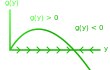
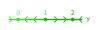

<!DOCTYPE html>
<html lang="en">

<head>
  <meta charset="UTF-8">
  <meta http-equiv="X-UA-Compatible" content="IE=edge">
  <meta name="viewport" content="width=device-width, initial-scale=1.0">
  <title>MTHE 224: Applied Math for Civil Engineers</title>

  <!--
    - favicon
  -->
  <link rel="shortcut icon" href="../../assets/images/pi_icon.ico" type="image/x-icon">

  <!--
    - custom css link
  -->
  <link rel="stylesheet" href="../../assets/css/style.css">

  <!--
    - google font link
  -->
  <link rel="preconnect" href="https://fonts.googleapis.com">
  <link rel="preconnect" href="https://fonts.gstatic.com" crossorigin>
  <link href="https://fonts.googleapis.com/css2?family=Poppins:wght@300;400;500;600&display=swap" rel="stylesheet">
</head>


<body>
    <main>

        <!--  #SIDEBAR   -->
        <aside class="sidebar" data-sidebar>
    
          <div class="sidebar-info">
            <div class="info-content">
              <h1 class="name" title="MTHE 224" >MTHE 224</h1>
    
              <p class="title">Applied Mathematics for Civil Engineers</p>
            </div>
    
            <button class="info_more-btn" data-sidebar-btn>
              <ion-icon name="chevron-down"></ion-icon>
            </button>
    
          </div>
    
          <div class="sidebar-info_more">
    
            <div class="separator"></div>
    
            <ul class="contacts-list">
    
              <li class="contact-item">
    
                <div class="icon-box">
                  <ion-icon name="mail-outline"></ion-icon>
                </div>
    
                <div class="contact-info">
                  <p class="contact-title">Email</p>
    
                  <a href="mailto:Tyler.meadows@queensu.ca" class="contact-link">tyler.meadows@queensu.ca </a>
                </div>
    
              </li>
    
              <li class="contact-item">
    
                <div class="icon-box">
                  <ion-icon name="location-outline"></ion-icon>
                </div>
    
                <div class="contact-info">
                  <p class="contact-title">Location</p>
    
                  <address>127 Jeffery Hall, Queen's University</address>
                </div>
               </li>
               <li class = "contact-item"> 
                <div class="icon-box">
                  <ion-icon name = "calendar-outline"></ion-icon>
                </div>
                <div class = "contact-info">
                  <p class = "contact-title">Lecture Times</p>
                  <time>Mon: 11:30-12:30</time>
                  <time>Tue: 13:30-14:30</time>
                  <time>Thu: 12:30-13:30 </time>
                </div>
              </li>
    
            </ul>

    
        </aside>


        <!-- Main Stuff -->
        <div class="main-content">
               <!-- #NAVBAR  -->
               <nav class="navbar">
    
                <ul class="navbar-list">
                  <li class="navbar-itme">
                    <a href="ODEs03.html" class= "navbar-link">Previous</a>
                  </li>
                  <li class="navbar-item active">
                    <a href="../MTHE224.html?page=lectures" class = "navbar-link">Lectures</a>
                  </li>
        
                  <li class="navbar-item">
                    <a href="ODEs05.html" class="navbar-link">Next</a>
                  </li>
        
                </ul>
        
              </nav>
              <!-- Lecture Content--> 
              
            <article class="lecture active" data-page="lecture">
                <header>
                  <h2 class="h2 article-title">Autonomous Differential Equations</h2>
                </header>
                <div class = "lecture">
                <p> At the end of last class, we found a one-parameter family of solutions to the differential equation $$ \frac{dy}{dt} = y(1-y).$$ 
                    A good question might be whether or not this family of solutions encompasses all of the solutions to this differential equation. 
                    To demonstrate that this is not all of the solutions, we can try to find solutions corresponding to different initial conditions. 
                    For example, the family of solutions is $$ y(t) = \frac{C e^{t}}{1+Ce^{t}},$$
                    and the solution that corresponds to $y(0) = 2$ is 
                    $$y(t) = \frac{-2 e^{t}}{1-2 e^{t}}$$
                    On the other hand, no choice of $C$ will get us a solution that corresponds to $y(0)=1$.
                </p>
                <p> When we went about solving the differential equation, we had to divide by $y(1-y)$. Implicit in this division is the understanding that 
                    $y(1-y)\ne 0$. However, if $y = 0$ or $y=1$, then this assumption is violated. It turns out that these two constant values of $y$ are also solutions to the differential equation
                    since $\frac{d}{dt} 1 = \frac{d}{dt} 0 = 0.$ Solutions like this that are not part of a family of solutions are called singular solutions, and constant solutions to an ordinary differential equation are called equilibrium solutions. Equilibrium solutions
                    are a valuable tool for studying a special class of separable equations.
                </p>
                <p><b>Definition:</b> A separable differential equation is called an autonomous differential equation if $f(t) = 1.$ This means that any autonomous differential equation can be written as 
                $$\frac{dy}{dt} = g(y)$$
                </p>
                <p>Since equilibrium solutions $y^*$ to autonomous differential equations are constants, they satisfy 
                $$ \frac{dy}{dt} = 0 = g(y^*),$$
                and can therefore be found by finding the roots of $g(y).$
                </p>
                <p><b>Example:</b> The equilibrium solutions to $$\frac{dy}{dt} =\sin(y)$$ are $y_n^*=n\pi$ for $n\in\mathbb{Z} = \{0,1,-1,2,-2,...\}.$ Therefore there are an infinite number of equilibrium solutions.</p>
                <p> In many cases we will not be able to find all of the solutions to autonomous differential equations. In these cases, we can usually at least find the equilibrium solutions. These equilibrium solutions can help us
                    get an understanding of what the long-term behaviour of other solutions are.
                </p>
                <p><b>Definition:</b> An equilibrium solution $y^*$ is stable if every solution $y(t)$ that starts sufficiently close to $y^*$ converges to $y^*$ as $t\to \infty$. An equilibrium solution $y^*$ is unstable if it is not stable.
                </p>
                <p><b>Example:</b> Consider $$\frac{dy}{dt} = y(1-y).$$ The equilibrium solution $y=1$ is stable since, by L'Hopital's Rule
                $$\lim_{t\to\infty} \frac{Ce^{t}}{1+Ce^{t}} = \lim_{t\to\infty}\frac{Ce^{t}}{Ce^{t}}=1$$
                as long as $C\ne 0.$</p>
                <p> We can confirm this visually by looking at plot of some solutions on a the direction field
                    
                </p>
                <h2>Phases Plots</h2>
                <p>A useful tool for autonomous differential equations is the idea of a phase plot. Since there is no dependence on $t$ on the right hand side, we can learn a lot about solutions to an autonomous differential equation by looking at the graph of $g(y).$
                For areas where $g(y)>0,$ we also have $dy/dt>0.$ Therefore solutions have to be increasing in regions. Likewise, solutions have to be decreasing in regions where $g(y) < 0.$ We can annotate the horizontal axis on a plot of $g(y)$ using arrows to get this point across:
                
                The two equilibrium solutions are the points where the function $g(y)$ crosses the horizontal axis. We can see in this picture that, since the arrows point towards the equilibrium solution $y^*=1$, it is stable. On the other hand, the arrows point away from $y^*=0$, so it is unstable. 
                </p> 
                <p>Actually, this picture suggests a simple algebraic test for stability. Stable points will be ones where $g(y)>0$ for values below $y^*$ and $g(y) &lt; 0$ for values of $y$ above $y^*.$ One way for these two conditions to be satisfied is if $g'(y^*) &lt; 0.$ On the other hand, if $g'(y^*)>0$, then the equilibrium is unstable. </p>
                <p><b>Example:</b> Draw a phase plot for the differential equation
                $$ \frac{dy}{dt} = y(y-2)(1-y).$$
                There are three equilibrium solutions: $y^* = 0$, $y^*=1$ and $y^*=2.$ We won't be able to find a family of solutions to this differential equation, so 
                we will rely on the stability properties of these equilibria to determine the behaviour of solutions. 
                </p>
                <p>The derivative of the right hand side with respect to $y$ is $$g'(y) = (y-2)(1-y)+y(1-y)-y(y-2).$$
                    Since we want to substitute roots into this equation, it will be easiest for us if we dont simplify this any more.  
                </p>
                <p>Since $g'(0) = -2$, $y^*=0$ is stable. Since $g'(1) = 1$, $y^*=1$ is unstable, and since $g'(2) = 1$, $y^*=2$ is stable. We can draw then phase portrait for this differential equation without knowing what the function $g$ actually looks like
                 This gives us a visual representation of how solutions behave as $t$ gets large.  </p>

                <h2>Exercises</h2>
                <ol class="lecture-list">
                <li> Draw a phase plot for  
                    $$\frac{dy}{dt} =  y(1-y^2).$$ 
                </li>
                <li> Draw a phase plott for 
                    $$\frac{dy}{dt} = y^3-3y^2+3y-1$$
                </li>
                <li>
                    Draw a phase plot for 
                    $$\frac{dy}{dt} = y(1+y-e^y).$$
                </li>
                </ol>
                </div>
                </article>

        </div>
    </main>

    <!-- custom js link-->
    <script src="../../assets/js/script.js"></script>

    <!-- ionicon link -->
    <script type="module" src="https://unpkg.com/ionicons@7.1.0/dist/ionicons/ionicons.esm.js"></script>
    <script nomodule src="https://unpkg.com/ionicons@7.1.0/dist/ionicons/ionicons.js"></script>

    <!-- MathJaX-->
    <script>
        MathJax = {
          tex: {
           inlineMath: [['$', '$'], ['\\(', '\\)']]
          },
          svg: {
            fontCache: 'global'
          }
        };
        </script>
        <script type="text/javascript" id="MathJax-script" async
          src="https://cdn.jsdelivr.net/npm/mathjax@3/es5/tex-svg.js">
        </script>
</body>
</html>